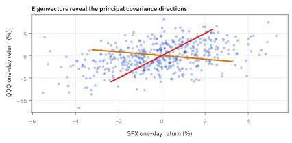
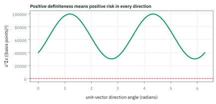

4.6 Eigenvalues and Positive Definiteness
ทิศพิเศษที่การแปลงเพียงยืดหรือหด
วาดวงกลมบนแผ่นยางแล้วดึงยางไปทางขวา บางเส้นยืดตามแนวเดิม ส่วนเส้นอื่นเอียงไปด้วย เราจะหาแนวที่ไม่ถูกหมุนได้ไหม?
เฉลย: ได้ ถ้าเส้นยาว 2 หน่วยกลายเป็น 3 หน่วยในแนวเดิม ตัวคูณ 1.5 บอกแรงยืดของแนวนั้น
eigenvector คือทิศที่ matrix เพียงยืดหรือหดโดยไม่หมุน; eigenvalue คือตัวคูณของทิศนั้น ส่วน positive definiteness ตรวจว่ารูป quadratic โค้งเป็นหลุมจริง
eigenvector คือเส้นที่ยืดแล้วไม่เสียทรง—เพื่อนทุกเส้นโดนผลักจนเอียง ยกเว้นมัน งาน quant ใช้ eigenvalue ตรวจ matrix และความเสถียรของ risk model
ศัพท์ที่ใช้ในหัวข้อนี้
- eigenvalue
- scalar ที่บอกว่า matrix ขยายหรือหด vector ใน eigen-direction เท่าไร ใช้จัดอันดับขนาดของ risk direction
- eigenvector
- nonzero vector ที่เมื่อ matrix คูณแล้วชี้ทิศเดิม ใช้เป็น axis ของ principal risk directions
- covariance matrix
- matrix ของ variance บน diagonal และ covariance นอก diagonal ใช้คำนวณ variance ของ portfolio returns
- positive definite
- คุณสมบัติของ symmetric matrix ที่ quadratic form เป็นบวกสำหรับ vector ที่ไม่เป็นศูนย์ ใช้รับรองว่า portfolio variance เป็นบวกและ optimization มี geometry ที่ดี
- quadratic form
- นิพจน์ $x^{\mathsf T}\Sigma x$ ที่วัด variance ตาม portfolio direction $x$ ใช้เปลี่ยน covariance matrix เป็น risk scalar
- basis point (bp)
- หนึ่งส่วนในหนึ่งหมื่นของ return หรือ 0.0001 ใน decimal ใช้รายงานการเปลี่ยนแปลงเล็ก ๆ และหน่วย variance แบบ basis-point-squared
- SPX
- ดัชนี S&P 500 ของหุ้นสหรัฐฯ ใช้เป็น United States (US) market return ใน scatter ตัวอย่าง
- QQQ
- กองทุนที่ติดตาม Nasdaq-100 ใช้เป็น technology-heavy return คู่กับ SPX ในตัวอย่าง
สัญลักษณ์ที่ใช้ในหัวข้อนี้
| สัญลักษณ์ | ความหมาย | หน่วย |
|---|---|---|
| $\Sigma$ | covariance matrix ของ daily returns | (decimal return)² ที่ horizon หนึ่งวัน |
| $\lambda$ | eigenvalue ของ $\Sigma$ | (decimal return)² ที่ horizon หนึ่งวัน |
| $v$ | eigenvector ของ $\Sigma$ | unitless เมื่อ normalize |
| $x$ | portfolio direction หรือ weight vector | unitless |
| $x^{\mathsf T}\Sigma x$ | variance ตาม direction $x$ | (decimal return)² ที่ horizon หนึ่งวัน |
| $r_{SPX},r_{QQQ}$ | daily returns ของสินทรัพย์ | decimal return ในหนึ่งวัน |
ที่มาที่ไป: ทิศที่การแปลงทำได้แค่ยืดหรือหด
แนวคิดนี้เกิดจากการศึกษารูปทรงของสมการกำลังสอง ซึ่งเป็นปัญหาที่นักคณิตศาสตร์สนใจมาตั้งแต่ศตวรรษที่สิบแปด คำถามคือมีมุมมองไหนที่ทำให้สมการที่ดูยุ่งเหยิงกลายเป็นสมการที่เรียบง่ายที่สุด
คำตอบคือมีทิศพิเศษบางทิศที่การแปลงไม่หมุนมันเลย ทำแค่ยืดหรือหด และถ้าเรามองปัญหาจากทิศเหล่านั้น ทุกอย่างจะแยกออกจากกันเป็นอิสระ
ในงานการเงิน ความเสี่ยงของพอร์ตคือสมการกำลังสองพอดี ทิศพิเศษเหล่านั้นจึงกลายเป็นทิศของความเสี่ยง และขนาดการยืดหดกลายเป็นขนาดของความเสี่ยงในทิศนั้น
นอกจากนั้นมันยังให้เครื่องตรวจที่จำเป็น เพราะความเสี่ยงติดลบไม่ได้ ขนาดการยืดจึงต้องเป็นบวกทุกทิศ
ที่มาและประวัติศาสตร์: จากวงโคจรดาวเคราะห์สู่ความเสี่ยงพอร์ตการลงทุน
แนวคิดเรื่อง eigenvalue และ eigenvector ไม่ได้เริ่มจากการเงินหรือตารางตัวเลขในคอมพิวเตอร์ แต่เกิดจากปัญหากลศาสตร์ดาราศาสตร์และการหมุนของวัตถุแข็งเกร็งในศตวรรษที่สิบแปด ในช่วงราว ๆ ทศวรรษ 1750 ถึง 1770 นักคณิตศาสตร์อย่าง Leonhard Euler และ Joseph-Louis Lagrange พยายามแก้สมการการโคจรของดาวเคราะห์และการหมุนของลูกข่าง
ปัญหาในยุคนั้นคือ เมื่อตั้งแกนพิกัดตามปกติ พิกัดทุกแกนจะส่งแรงดึงข้ามกันไปมา สมการการเคลื่อนที่จึงพัวพันกันจนแก้ไม่ออก Euler ค้นพบว่า ถ้าหมุนระบบพิกัดไปตาม 'แกนหลัก' (principal axes) พจน์คูณไขว้ทั้งหมดจะหายไป การเคลื่อนที่ที่ดูซับซ้อนจะแยกตัวออกเป็นระบบสั่นอิสระที่ไม่กวนกันเลย แกนหลักเหล่านั้นก็คือ eigenvector และอัตราการหมุนหรือความถี่เฉพาะก็คือ eigenvalue
ต่อมาราว ๆ ปี 1829 Augustin-Louis Cauchy ได้วางรากฐานทางพีชคณิตอย่างรัดกุม โดยพิสูจน์ spectral theorem ว่า symmetric matrix ที่มีสมาชิกเป็นจำนวนจริง จะมี eigenvalue เป็นจำนวนจริงเสมอ และมี eigenvector ที่ตั้งฉากกันเป็นมุมฉากครบทุกมิติเสมอ ทำให้เราหมุนแกนเพื่อกำจัดพจน์คูณไขว้ได้กับทุกปัญหาที่มีโครงสร้างสมมาตร
จนกระทั่งปี 1952 Harry Markowitz ได้นำคณิตศาสตร์ชุดนี้มาพลิกโฉมโลกการเงิน ก่อนหน้านั้นผู้จัดการกองทุนมองหุ้นทีละตัว ใครปันผลดีก็ซื้อ แต่ Markowitz ชี้ว่าความเสี่ยงพอร์ตไม่ใช่ผลรวมความเสี่ยงรายตัว หากเป็น quadratic form ที่เชื่อมโยงด้วย covariance matrix และการหา eigenvalue คือกุญแจที่บอกว่าความเสี่ยงจริง ๆ ซ่อนอยู่ตรงไหน และพอร์ตกำลังเสี่ยงกับอะไร
Worked Example — โจทย์และสิ่งที่ให้มา
ตอนนี้ให้มอง $\Sigma$ เป็น symmetric matrix ที่สรุปการแกว่งของข้อมูลสองชุดก่อน ความหมายและวิธีสร้าง covariance matrix จาก returns จะเรียนเต็มในหัวข้อ 6.7
โจทย์ให้อะไรมาบ้าง: $r_{SPX},r_{QQQ}$ เป็น daily returns แบบ decimal และ matrix นี้มีหน่วย decimal-return squared ต่อวัน เราต้องหาแกนที่ matrix ไม่เปลี่ยนทิศ และตรวจว่าทุก direction ให้ค่าความเสี่ยงเป็นบวก
ขั้นที่ 1 — แผ่นยางจากประโยคเปิดเรื่อง: ทิศไหนถูกยืดเฉย ๆ ทิศไหนถูกหมุน
ลองกับตารางที่ง่ายที่สุดที่ยืดแผ่นยางได้: ดึงแนวนอนสองเท่า ปล่อยแนวตั้งเท่าเดิม แล้วส่งลูกศรสามอันเข้าไป
ตาราง $M$ ดึงแนวนอนออกสองเท่า ไม่แตะแนวตั้ง ลูกศรตามแนวนอนยาวขึ้นสองเท่าแต่ยังชี้ทางเดิม (ตัวคูณ 2) ลูกศรแนวตั้งไม่เปลี่ยนเลย (ตัวคูณ 1)
ลูกศรเฉียง $(1,1)$ กลายเป็น $(2,1)$ ซึ่งชี้คนละทิศ ไม่มีตัวคูณ $c$ ตัวไหนทำให้ $(2,1)=c(1,1)$ ได้ ทิศนี้จึงไม่ใช่ทิศพิเศษ
ทิศพิเศษสองทิศเรียกว่า eigenvector ตัวคูณ 2 กับ 1 เรียกว่า eigenvalue ที่ยากคือเมื่อตารางไม่เป็นแนวทแยง ทิศพิเศษจะเอียง และต้องคำนวณหา ซึ่งคือขั้นถัด ๆ ไป
ขั้นที่ 2 — นิยามของ eigenvector: ทิศที่การแปลงไม่หมุนมัน
บรรทัดนี้เป็น นิยาม ของสิ่งที่เรากำลังตามหา ไม่ใช่ผลที่พิสูจน์มา การแปลงส่วนใหญ่ทั้งหมุนทั้งยืด แต่มีบางทิศที่มันแค่ยืดหรือหดเฉย ๆ ไม่หมุนเลย เราตั้งชื่อทิศพวกนั้นว่า eigenvector และตั้งชื่อจำนวนเท่าที่มันถูกยืดว่า eigenvalue
$v$ คือ eigenvector ที่ไม่เป็นศูนย์ และ $\lambda$ คือ eigenvalue; เมื่อ covariance matrix คูณ $v$ ผลลัพธ์ยังอยู่ทิศ $v$ แต่ยาวขึ้นหรือสั้นลงตาม $\lambda$
ขั้นที่ 3 — quadratic risk
เหตุผลที่เรื่องนี้สำคัญกับการเงิน คือความเสี่ยงของพอร์ตเขียนในรูปนี้พอดี หกบรรทัดนี้แสดงว่ารูปนั้นไม่ได้ถูกเลือกมาเพราะสวย มันคือสิ่งที่ออกมาเองจากนิยามของ variance และเพราะมันเป็นรูปนี้ สมบัติเรื่อง eigenvalue ในขั้นถัดไปจึงแปลเป็นความเสี่ยงได้ตรง ๆ
เหตุผลที่เรื่อง eigenvalue สำคัญกับการเงิน คือความเสี่ยงพอร์ตเขียนออกมาเป็นรูปนี้พอดี และรูปนี้ไม่ได้ถูกเลือกมาเพราะสวย มันออกมาเองจากนิยามของ variance เริ่มจากดึงน้ำหนักออกนอกค่าเฉลี่ย ทำได้เพราะน้ำหนักเป็นเลขที่เราเลือกเอง ไม่ได้สุ่ม แล้วลบค่าเฉลี่ยออกและดึงตัวร่วม
พอใส่นิยาม variance จากหัวข้อ 1.4 ก้อนในวงเล็บเป็นเลขตัวเดียว ไม่ใช่ตาราง การยกกำลังสองจึงเขียนเป็นตัวมันคูณทรานสโพสของตัวเองได้ แล้วดึงน้ำหนักทั้งสองข้างออกนอกค่าเฉลี่ย เหลือก้อนตรงกลางซึ่งหัวข้อ 6.7 จะตั้งชื่อให้ว่า covariance matrix
ขั้นที่ 4 — positive definiteness
ความเสี่ยงติดลบไม่ได้ เงื่อนไขที่รับประกันข้อนั้นเขียนได้สามแบบที่เท่ากันหมด และแบบที่ตรวจง่ายที่สุดคือดูว่าทุก eigenvalue เป็นบวก
สำหรับ symmetric covariance matrix สัญลักษณ์ $\Sigma\succ0$ หมายถึง positive definite; equivalent conditions คือ quadratic risk เป็นบวกทุก nonzero direction และ eigenvalues ทุกตัวเป็นบวก
เหตุผลของการเทียบ eigenvalue: matrix จริงที่สมมาตรมีฐาน eigenvector ตั้งฉากที่ยาวหนึ่งหน่วย เขียน $x=\sum_i c_i v_i$ แล้วคูณได้ $x^\mathsf{T}\Sigma x=\sum_i\lambda_i c_i^2$ เพราะ $v_i^\mathsf{T} v_j$ เป็นศูนย์เมื่อคนละตัว
ถ้า eigenvalue ทุกตัวบวกและ $x\ne0$ ต้องมี $c_i$ ไม่เป็นศูนย์อย่างน้อยตัวหนึ่ง ผลรวมจึงบวก กลับกัน ถ้าเลือก $x=v_i$ จะได้ค่าความเสี่ยง $\lambda_i$ จึงต้องบวกทุกตัวเพื่อให้เป็น positive definite
ขั้นที่ 5 — พิสูจน์ทำไมความเสี่ยงบวกทุกทิศเทียบเท่ากับ eigenvalues เป็นบวกทุกตัว
ในขั้นก่อนหน้า เราบอกว่า positive definite แปลว่า $x^{\mathsf{T}}\Sigma x > 0$ ทุก nonzero $x$ และเทียบเท่ากับ $\lambda_i > 0$ ทุกตัว บรรทัดเหล่านี้คือสะพานเชื่อมที่พิสูจน์ข้อความนั้นโดยตรง ไม่ต้องจำสูตรลอย ๆ
ใจความสำคัญอยู่ที่สมบัติการตั้งฉากของ eigenvectors: เมื่อ matrix มีความสมมาตร ทิศพิเศษจะตั้งฉากกันเองเป็นมุมฉากเสมอ นั่นคือผลคูณ $v_j^{\mathsf{T}}v_i$ จะเป็น 1 เมื่อเป็นตัวเดียวกัน และเป็น 0 ทันทีเมื่อคนละตัว
เมื่อกระจายพอร์ต $x$ ใด ๆ ลงบนแกน eigenvectors เหล่านี้ พจน์คูณไขว้ทั้งหมดจะหายไปจนหมด เหลือเพียงผลรวมกำลังสอง $\sum \lambda_i c_i^2$ ทำให้โครงสร้างความเสี่ยงแยกขาดจากกันเป็นอิสระ
จุดนี้ตอบคำถามทันที: ถ้า $x \ne 0$ จะต้องมีพิกัด $c_i \ne 0$ อย่างน้อยหนึ่งแกน กำลังสองจึงเป็นบวกเสมอ หาก $\lambda_i > 0$ ทุกตัว ผลรวมทั้งหมดจึงบวกแน่นอน
และถ้ากลับกันเราเลือกพอร์ตให้ชี้ตรงไปตามแกน $v_k$ เพียงแกนเดียว ความเสี่ยงที่คำนวณได้จะเท่ากับ $\lambda_k$ พอดี ดังนั้นความเสี่ยงจะบวกทุกทิศได้ eigenvalues ก็ต้องบวกครบทุกตัว
ขั้นที่ 6 — ที่มาของสมการ characteristic: ทำไม determinant ต้องเป็นศูนย์
ก่อนจะแทนตัวเลขลงไปในสูตรกำลังสอง เราต้องตอบให้ได้ก่อนว่าสมการนี้โผล่มาจากไหน บรรทัดเหล่านี้สร้างสมการ characteristic จากนิยามตั้งต้นโดยไม่ข้ามขั้นตอน
คำถามที่คนมักสะดุดคือ ทำไมจู่ ๆ เราถึงจับ determinant ให้เท่ากับศูนย์ได้ ใครเป็นคนอนุญาตให้ตั้งสมการนี้
คำตอบอยู่ที่เงื่อนไข $v \ne 0$: ถ้า matrix $(\Sigma - \lambda I)$ มี inverse เราจะคูณ inverse ทั้งสองข้างแล้วได้คำตอบเดียวคือ $v = 0$ ซึ่งผิดข้อตกลงของ eigenvector
ดังนั้น matrix นี้ต้องไม่มี inverse ซึ่งในพีชคณิตเชิงเส้น สิ่งนี้เกิดขึ้นได้เมื่อ determinant มีค่าเท่ากับศูนย์เท่านั้น
เมื่อกระจายผลคูณไขว้ของ determinant สำหรับขนาด $2\times 2$ พจน์กำลังหนึ่งจะยุบรวมกันได้ผลบวกบนเส้นทแยงมุมหลักหรือ trace และพจน์คงที่จะกลายเป็น determinant ของ $\Sigma$ พอดี
ขั้นที่ 7 — คำนวณ eigenvalues ของข้อมูลตัวอย่าง
จาก $\Sigma v=\lambda v$ ลบ $\lambda v$ สองข้างได้ $(\Sigma-\lambda I)v=0$ ต้องการคำตอบ $v\ne0$ จึงต้องให้ matrix นี้กลับด้านไม่ได้ หรือ determinant เป็นศูนย์ สำหรับสองคูณสอง determinant คือ $(a-\lambda)(d-\lambda)-bc=\lambda^2-(a+d)\lambda+(ad-bc)$ นี่คือที่มาของสมการกำลังสองด้านล่าง ไม่ได้เลือกcoefficientขึ้นมาเอง
บรรทัดแรกสองบรรทัดคือ trace กับ determinant ซึ่งเป็นค่าคงที่สองตัวของสมการ จากนั้นก็คือสูตรกำลังสองที่คุ้นเคย รากทั้งสองเป็นบวก จึงยืนยันว่า matrix นี้ positive definite
ขั้นที่ 8 — แปลงเป็น basis-point-squared เพื่ออ่านค่าบนโต๊ะทำงาน
ตัวเลข eigenvalue ข้างบนมีหน่วยเป็น decimal ยกกำลังสอง ซึ่งอ่านยาก แปลงเป็น basis point ยกกำลังสองจะเทียบกับความรู้สึกบนโต๊ะได้ง่ายกว่า
ส่วนด้วย $10^{-8}$ คือการเลื่อนจุดทศนิยมไปแปดตำแหน่ง เช็กได้ว่าสองตัวรวมกันได้ 130,000 ซึ่งตรงกับ trace 0.0013 ที่แปลงหน่วยแล้ว
ขั้นที่ 9 — หาทิศพิเศษของ eigenvalue ตัวใหญ่ แล้วตรวจว่าตารางแค่ยืดมันจริง
eigenvalue บอกว่ายืดกี่เท่า แต่ยังไม่บอกว่ายืดทิศไหน ทิศหาได้จากสมการเดิมโดยแทน $\lambda_1$ กลับเข้าไป
บรรทัดแรกคือสมการ $\Sigma v=\lambda_1 v$ ย้ายข้างเป็น $(\Sigma-\lambda_1 I)v=0$ แล้วอ่านแถวบน: มันบอกอัตราส่วน $v_2/v_1$ เท่านั้น เพราะ eigenvector ยาวเท่าไรก็ได้ ทิศคือสิ่งที่นับ
ทิศ $(1,\,2.486)$ เอียงไปทาง QQQ มากกว่า SPX แปลว่าความเสี่ยงก้อนใหญ่สุดของคู่นี้คือ ‘ทั้งคู่ขยับทางเดียวกัน โดย QQQ ขยับแรงกว่า 2.5 เท่า’
บรรทัดสุดท้ายคือการตรวจแบบแผ่นยาง: คูณตารางเข้าไป ได้ลูกศรทิศเดิมที่ยาวขึ้น $\lambda_1$ เท่า ไม่หมุนเลย
การทำให้ยาวหนึ่งหน่วย: ความยาวของ $(1,2.486)$ คือ $\sqrt{1^2+2.486^2}\approx2.6796$ หารทั้งสองช่องด้วยความยาวเดียวกัน จึงได้ประมาณ $(0.3733,0.9277)$ ทิศไม่เปลี่ยนเพราะส่วนด้วยค่าบวกเดียวกัน
ขั้นที่ 10 — หาทิศพิเศษแกนที่สองและตรวจว่าสองแกนตั้งฉากกันจริง
เมื่อได้แกนความเสี่ยงหลักจาก eigenvalue ตัวใหญ่แล้ว เราต้องหาแกนที่สองที่คู่กับ eigenvalue ตัวเล็ก เพื่อดูว่าความเสี่ยงส่วนที่เหลือหน้าตาเป็นอย่างไร และตรวจว่าสองแกนนี้ตั้งฉากกันตามทฤษฎีจริงหรือไม่
แทนค่า $\lambda_2 = 0.000303446$ ลงในสมการแถวบน จะได้ความสัมพันธ์ $v_2 \approx -0.4023 v_1$ เครื่องหมายลบแสดงว่าสินทรัพย์ทั้งสองเคลื่อนที่สวนทางกันในแกนนี้
เมื่อปรับความยาวให้เป็น 1 ด้วยการหาร $\sqrt{1^2 + (-0.4023)^2} \approx 1.0779$ จะได้ unit vector $v_2 = [0.9277, -0.3733]^{\mathsf{T}}$ ซึ่งชี้ไปในแนว long SPX และ short QQQ
ผลคูณ $\Sigma v_2$ ให้ผลลัพธ์ตรงกับ $\lambda_2 v_2$ พอดิบพอดี ยืนยันว่า matrix เพียงแค่ยืดหด vector นี้ด้วยตัวคูณ $\lambda_2$ โดยไม่หมุนเลย
และเมื่อนำมาคูณ dot product กับ $v_1$ จะได้ศูนย์พอดี ยืนยันว่าแกนทั้งสองตั้งฉากกัน ความเสี่ยงสองก้อนนี้จึงแยกขาดจากกันโดยสิ้นเชิง ไม่มีส่วนซ้อนทับ
ขั้นที่ 11 — ขอบเขตความเสี่ยงของพอร์ต: ทำไมกราฟหมุนจึงถูกล็อกระหว่างสอง eigenvalues
ใน Figure 4.6d เราเห็นเส้นโค้งความเสี่ยงแกว่งขึ้นลงตามมุมพอร์ตโดยไม่เคยหลุดกรอบ ตัวเลข eigenvalue ทั้งสองตัวไม่ได้เป็นแค่เลขลอย ๆ แต่เป็นตัวกำหนดเพดานบนและพื้นล่างของความเสี่ยงอย่างแท้จริง
สมการนี้ตอบคำถามว่า ทำไมไม่ว่าเราจะผสมสัดส่วนพอร์ตอย่างไร ความเสี่ยงของ unit portfolio ก็ไม่มีวันต่ำกว่า $\lambda_2$ หรือสูงกว่า $\lambda_1$ ไปได้เลย
เพราะเมื่อเขียนพอร์ตบนฐานของ eigenvectors กำลังสองของพิกัดรวมกันได้หนึ่งเสมอ ความเสี่ยงจึงกลายเป็นการเกลี่ยน้ำหนักระหว่างค่าคงที่สองตัวเท่านั้น
ค่าต่ำสุดเกิดขึ้นเมื่อเทน้ำหนักทั้งหมดไปที่ $c_2 = 1$ ซึ่งตรงกับแกน $v_2$ ได้ความเสี่ยง $30{,}344.55\text{ bp}^2$
และค่าสูงสุดเกิดขึ้นเมื่อเทน้ำหนักไปที่ $c_1 = 1$ ซึ่งตรงกับแกน $v_1$ ได้ความเสี่ยง $99{,}655.45\text{ bp}^2$ ตรงกับยอดคลื่นในรูปภาพอย่างแม่นยำ
แล้วเอาไปใช้ทำอะไรได้จริงบ้าง
การหาทิศที่การแปลงเพียงยืดหรือหด ทำให้เห็นโครงสร้างของความเสี่ยงที่ซ่อนอยู่
ใช้ตรวจว่าตารางความเสี่ยงที่ประมาณมานั้นใช้ได้ โดยดูว่าค่ายืดหดทุกตัวเป็นบวก ถ้ามีตัวติดลบแปลว่ามีพอร์ตที่ความเสี่ยงติดลบ ซึ่งเป็นไปไม่ได้
ใช้หาว่าความเสี่ยงกระจุกอยู่ทิศไหน ค่ายืดที่ใหญ่ที่สุดบอกทิศที่พอร์ตเปราะที่สุด
ใช้ลดมิติของปัญหา โดยเก็บเฉพาะทิศที่สำคัญ ซึ่งเป็นหัวใจของการลดมิติในหัวข้อ 17.4
ทำไม optimizer ถึงระเบิด: ความเชื่อมโยงระหว่าง positive definiteness กับ Hessian
ในการจัดพอร์ตตามแนวคิด Markowitz เป้าหมายคือการหาจุดต่ำสุดของ objective function กำลังสองอย่าง $\frac{1}{2}x^{\mathsf{T}}\Sigma x - \frac{1}{\gamma}\mu^{\mathsf{T}}x$ ภายใต้เงื่อนไขงบประมาณ
ในวิชา optimization เงื่อนไขที่รับประกันว่าจุด stationary ($\nabla f = 0$) จะเป็นจุดต่ำสุดระดับ global อย่างแท้จริง คือ Hessian matrix $\nabla^2 f(x) = \Sigma$ จะต้องเป็น positive definite
เมื่อ covariance matrix เป็น positive definite ผิวโค้งของความเสี่ยงจะเป็นรูปชามหงาย (strictly convex) ที่มีก้นชามเพียงจุดเดียว ไม่ว่าalgorithmจะเริ่มค้นหาจากตรงไหน ก็จะไหลลงสู่จุดต่ำสุดที่ถูกต้องเสมอ
แต่หาก covariance matrix ที่ประมาณมาจากข้อมูลในอดีตมีปัญหา เช่น มีข้อมูลขาดหายจนเกิด eigenvalue ติดลบ ผิวโค้งจะบิดกลายเป็นรูปอานม้า (saddle) ทันที
ในทิศทางของ eigenvector ที่มี eigenvalue ติดลบ การเพิ่มขนาดน้ำหนักจะทำให้พจน์ความเสี่ยงดิ่งลงสู่ลบอนันต์ ตัว optimizer จึงมองเห็นเป็นโอกาสที่ไร้ความเสี่ยง และเทน้ำหนัก long-short แบบสุดขั้วจนพอร์ตระเบิด นี่คือเหตุผลที่การตรวจ eigenvalues จึงเป็นขั้นตอนแรกก่อนรันmodelเสมอ
Figure 4.6a — covariance eigenvectors on a scatter

เส้นสองเส้นคือ eigenvector axes ของ return cloud; แกนยาวตรงกับ eigenvalue 0.000996554 และชี้ risk direction ที่มี variance มากกว่าสำหรับ unit-norm portfolio
Figure 4.6b — covariance ellipse and axes

เมื่อหมุนพิกัดไปตาม eigenvectors covariance กลายเป็น diagonal และครึ่งแกนของ ellipse เท่ากับรากที่สองของ eigenvalues; ยกความยาวกำลังสองก็กลับมาเป็น variance พอดี
Figure 4.6c — eigenvalue risk budget

eigenvalue ใหญ่คิดเป็น 76.7% ของผลรวมสอง eigenvalues หรือ trace ของ covariance; แท่งใช้หน่วย basis-point-squared ที่แปลงด้วย factor $10^8$ อย่างถูกต้อง
Figure 4.6d — positive quadratic risk

เมื่อกวาด unit vector ครบรอบ quadratic risk อยู่ระหว่าง 30,344.55 กับ 99,655.45 basis-point-squared ซึ่งตรงกับ eigenvalues เล็กสุดและใหญ่สุด และไม่เคยแตะศูนย์
คำตอบ — eigenvalues เป็นบวกทั้งคู่
คำตอบ: covariance matrix มี eigenvalues 0.000996554 และ 0.000303446 ซึ่งเป็นบวกทั้งคู่ จึง positive definite; แกนแรกมี variance สูงกว่าแกนที่สองในกลุ่ม direction ที่ norm เท่ากับ 1
ตรวจเองใน 10 วินาที: บวก eigenvalues ต้องได้ 0.001300000 เท่ากับ trace 0.0004 + 0.0009 ถ้าผลรวมไม่ตรง แปลว่าคำนวณรากหรือปัดเลขผิด
ใช้ตัดสินใจ: model นี้อนุญาตให้ใช้ quadratic risk กับ optimizer แบบ convex ได้ แต่ถ้า eigenvalue ต่ำสุดเข้าใกล้ศูนย์ในข้อมูลรอบใหม่ ให้หยุดและตรวจ conditioning ก่อน invert
กับดัก: eigenvalue ติดลบแล้วฝืน optimize
sample covariance ที่คำนวณจาก complete data อย่างสอดคล้องต้องเป็น positive semidefinite ดังนั้น eigenvalue ติดลบไม่ใช่ ‘risk ติดลบ’ และไม่ควรโทษ sampling noise อย่างเดียว สาเหตุที่ต้องตรวจคือ pairwise missing-data estimates ที่ใช้คนละ sample, rounding หรือการปรับ matrix, numerical error, และ matrix ที่ไม่ symmetric ให้หยุด pipeline ตรวจต้นทางและใช้ repair method ที่ได้รับอนุมัติ
ข้อจำกัด: วิธีนี้สมมติอะไร และของจริงเป็นอย่างไร
| เรื่อง | วิธีนี้สมมติว่า | ของจริงเป็นอย่างไร | ผลที่ตามมาเวลาใช้งาน |
|---|---|---|---|
| การตีความ | ทิศที่ได้มีความหมาย | ทิศที่คำนวณมาอาจไม่ตรงกับปัจจัยทางธุรกิจใด ๆ | การตั้งชื่อให้ทิศแล้วเชื่อชื่อนั้นเป็นความผิดพลาดที่พบบ่อย |
| ความมั่นคง | ทิศที่ได้นิ่ง | ทิศที่มีค่ายืดใกล้เคียงกันจะสลับที่กันเองเมื่อข้อมูลเปลี่ยนนิดเดียว | รายงานความเสี่ยงอาจเปลี่ยนไปมาโดยที่พอร์ตไม่ได้เปลี่ยนเลย |
| ค่าที่ประมาณ | ค่ายืดหดที่คำนวณได้ถูกต้อง | ตัวที่เล็กที่สุดคลาดเคลื่อนมากที่สุด | และตัวที่เล็กที่สุดนั่นเองที่ถูกขยายมากที่สุดตอนกลับด้าน |
แถวล่างอธิบายว่าทำไมการจัดพอร์ตแบบตรงไปตรงมาจึงให้น้ำหนักที่สุดโต่งจนใช้ไม่ได้
สรุปที่ใช้ได้จริง
- eigenvector คือ risk axis และ eigenvalue คือ scale ของ variance ตาม axis
- quadratic form $x^{\mathsf T}\Sigma x$ คือ portfolio variance
- positive definite เทียบเท่ากับ positive quadratic risk และ positive eigenvalues
- scatter พร้อม eigenvectors ทำให้ covariance geometry อ่านได้ทันที